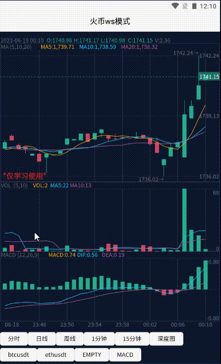
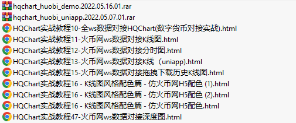

app效果图

教程介绍
- 使用hqchart提供的图形，
- 使用官网提供的ws接口对接数据。
- 支持日K，分钟K， 走势图， 深度图。
- app,h5 都支持。 完整的对接教程文档。
教程目录
- HQChart实战教程10-全ws数据对接HQChart(数字货币对接实战)
- HQChart实战教程11-火币网ws数据对接
- HQChart实战教程12-火币网ws数据对接分时图
- HQChart实战教程13-火币网ws数据对接K线[uniapp]
- HQChart实战教程15-火币网ws数据对接拖拽下载历史K线图
- HQChart实战教程16-K线图风格配色篇-仿火币网H5配色
- HQChart实战教程47-火币网ws数据对接深度图
- 提供uniapp,及vue的demo示例
教程内容

售价 299元
教程中内容提供1个月的免费答疑。
购买可以联系QQ 48274798 备注“购买火币对接完整教程”